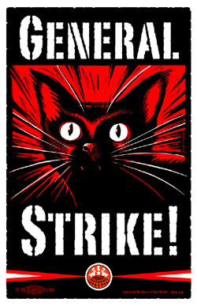

General Strike Pamphlet
Submitted on Sun, 02/27/2011 - 7:32pm
What Does Any of This Have to Do With A General Strike & With Wisconsin?
In the recently released prank call by a journalist pretending to be billionaire David Koch, Scott Walker said, “All week there's been 15-30,000 [protesters] a day, but I remind our lawmakers that there's 5.5 million people in this state and just because a bunch of guys who can jump off work because of their union[s]...doesn't mean the rest of your people are with you.” The truth is that these protesters are not “guys who can jump off work” – they are students, activists, union and non-union workers from the public and private sectors, Wisconsin families, and members of the religious community. Additionally, unionized and non-unionized workers both risk job security by taking time to protest. Essentially, Governor Walker doesn't think that the protesters represent the rest of the state. He thinks that the majority of Wisconsin agrees with his attempt to strip workers of basic rights. He is wrong. Despite facing opposition from millions, Walker still won't budge from his position on this issue. It will take something bigger from the unions, and from the working-class as a whole: a general strike.
A general strike will show Walker that millions of people are willing to fight his agenda
A General Strike: The Ultimate Tool of Change
What exactly is a general strike? A general strike is a strike involving workers across multiple trades or industries that involves enough workers to cause serious economic disruption.
In essence, a general strike is the complete and total shutdown of the economy. A general strike can last for a day, a week, or longer depending on the severity of the crisis, the resolve of the strikers, and the extent of public solidarity. During the strike, large numbers of workers in many industries (excluding employees of crucial services, such as emergency/medical) will stop working and no money or labor is exchanged. All decisions regarding the length of the strike, the groups of workers who continue working, and demands of the strikers are decided by a strike committee.
Past victories won by general strikes are:
· Chicago, New York, Cincinnati, and elsewhere, 1886 – First victory in the fight for an eight-hour day
· Toledo, OH, 1934 – First successful unionization of the auto industry.
· San Francsico, CA, 1934 – Unionization of all West Coast ports of the United States.
· Poland, 1980 – Began the process of democratic reforms that led to the end of Soviet control over the country.
· Egypt, 2011 – Brought the 30-year reign of an autocratic despot to an end.
If enough of us act together, we’ll see some serious changes, and quick. That’s the “general” part of a general strike. We’re all divided up by race, religion, gender, and political affiliation. In a general strike, people come together in large numbers across those divisions and unite around our struggles as workers. If enough of us stand together and stop work, Walker’s bill will be defeated – even if it passes! If enough of us are united, WE can decide the outcome.
Who should participate and how
A general strike against Walker would begin the process of rebuilding a strong labor movement in the United States. Since the U.S. plays such an important role in the global economy and world political system, this could also invigorate workers' struggles around the planet. To make it happen will require participation from many people across industries, across unions, and across the country.
Public Workers
The South Central Federation of Labor, a federation of over 97 labor organizations representing 45,000 workers, has endorsed to educate and prepare for a general strike. If your local is part of a different federation or district council, contact their Executive Board and your members and start your preparations for a strike immediately.
Union Members and General Strikes
Trade unions enable large groups of people a powerful, unified voice, from the local and its officers, representatives, stewards, and negotiators up to the level of a union, such as AFSCME. It may be difficult to get your union officials to agree to a general strike. Labor law is set up in the United States to discourage unions from standing together. Your union’s officials will be afraid of possible legal ramifications. They will also be afraid that no other unions will endorse the call or actually carry out the strike. Your union may have contractual agreements that union officers are worried about. Be prepared for these objections. Remind everyone that if the labor movement does not take a stand to stop Scott Walker today, there may not be a labor movement tomorrow. There are risks to building a general strike, but the much bigger risk is that Walker will accomplish his anti-union agenda.
Talk to your co-workers about the general strike. If you are meeting soon, there is a sample resolution to be found at madison.iww.org that you can bring to your local. If you aren’t meeting soon, talk to your coworkers and union stewards about holding an emergency meeting; most local unions have rules that allow for these types of meetings in their bylaws. Help educate your fellow workers by sharing this pamphlet and the news. Form an education and preparation committee to help organize your local.
If it seems that your union is opposing the desires of their rank-and-file to hold a strike, it is possible to act on a general strike without the consent of these leaders, as long as enough rank-and-filers stand together. A strike committee can be formed by a few elected representatives from each participating local who then gather into a larger coordinating body. These representatives should be elected by the rank-and-file members of each local and they should be able to be recalled by a majority vote of the workers they represent at any time. This body would have to hold together when (not if, when) one group is attacked or encouraged to strike out on its own.
If your shop decides not to go out, you can still strike “on the job”, that is, slow down or halt production through clumsiness, ignorance, or “work-to-rule”: following the rules so carefully that nothing gets done.
How the rest of us can prepare
In order to successfully conduct a general strike we must fully prepare ourselves for all possibilities.
The first step is to get as many workers to commit to the strike as possible. This needs to be done beforehand; not the day before the strike, and not after the strike has begun. We need to be able to trust the commitments of other workers, regardless of union affiliation. Talk about the general strike with people at rallies, at work, online, and at home with your friends, family, and neighbors. Ask your community about practical ways that they can aid a potential general strike or pass around the included leaflet to community groups in the area. Consider preparing a phone tree or online contact list to keep your friends, family, and fellow workers connected and prepared for emergencies.
Bring cardboard, markers, sticks, and tape to make picket signs; write protest chants and songs; bring bullhorns from your workplace or home to the street. There is already a support system in the capitol building for hungry and injured protesters, but we need to be prepared to expand these systems to a larger scale. Being on strike is exciting, but it is also difficult and tiring. When a general strike happens, workers will need to push each other to stay resolute, support each other when times are hard, and be able to ask for and accept help when they need it. When you are tired, hand your sign to someone else and get some rest. Protesters at the capitol have created amazing mutual support networks over the past weeks through little more than word-of-mouth, and if we continue to work together these networks can only get stronger.
Why rank and file solidarity is important for a general strike
It is important in a general strike to support other workers regardless of their positions in the workforce (unionized, non-unionized, public or private)-- to build the kind of relationship where an injury to one group of workers is an injury to all. Within our locals & unions, personal rivalries and pettiness can erode unity and the ability to work together for common gains. Groups can be pitted against one another during a general strike―city workers versus workers in more rural or isolated areas, or, as Gov. Walker attempted (but failed) to do, police and fire departments against the rest of the municipal workforce. When one group of workers is pitted against another, the strength the movement is in trouble. In a general strike, rumors about a lack of solidarity and inappropriate acts may be circulated by our governor and anti-worker segments of the media to deliberately demoralize and divide the participating groups. We must make an effort to not believe everything we hear―to go to the source and get facts before reacting.
Solidarity means uniting everyone: union and non-union, native citizens and immigrants, men and women, white and black and brown. A labor movement that turns away any worker isn’t anything but a powerless social club. We must believe all other workers can have a higher standard of living and gain the power and respect they deserve on the workplace. We will need to seek out individuals, organizations and community groups of all colors and creed. Their fight is our fight!
Solidarity makes us stronger and it spreads quickly. People are impressed by it and drawn to learn about and support our causes. Love really is stronger than hate, and many working families throughout labor battles in the past have been inspired by positive support from all corners of the working population. “Workers united will never be defeated,” we chant―for good reason.
Ways to Know When It's Happening
T he efforts towards a general strike are just beginning and the lines of communication we use will emerge as the situation evolves.
For updates, a sample resolution for your local, and more information on the General Strike, visit madison.iww.org
To send statements of solidarity or to ask for help educating your fellow workers or community members about the general strike, contact wigeneralstrike@gmail.com
Published 2011 by the Madison IWW
PO Box 2442, Madison, WI 53703-2442